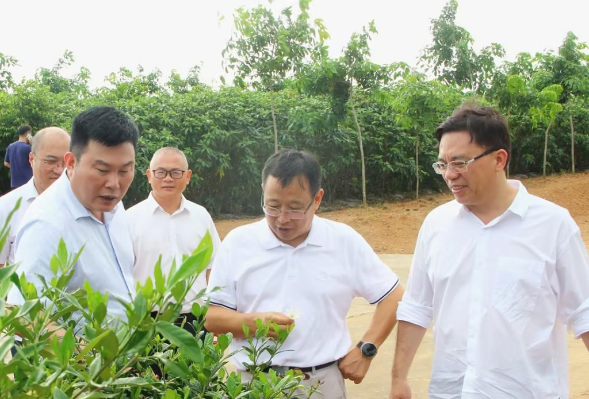

沉香产业资讯与曙光农场动态
ABOUT MAOMING AGRIBUSINESS
广东省茂名农垦集团有限公司（广东省茂名农垦局）是广东农垦属下五个垦区之一，土地主要分布在化州、高州、电白、信宜等县级市（区）。
围绕战略资源、绿色食品、城乡服务三大主业，赓续“艰苦奋斗、勇于开拓、守正创新、志求卓越”的广东农垦精神，扎实推进现代农业与乡村振兴。
农垦资讯与沉香知识小助手
你好，我是曙小香！关于广垦沉香、沉香文化和产品，有什么想了解的？